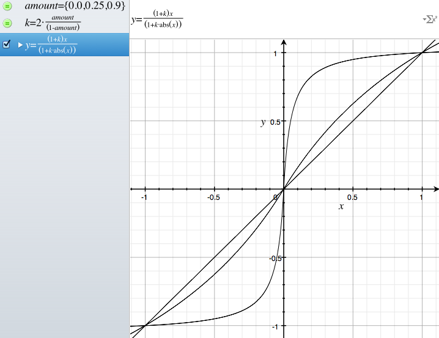
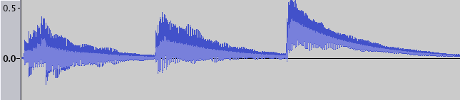
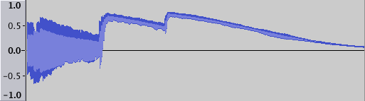
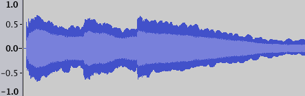

Creating Distortion in Overtone
Wed 19 December 2012 by Roger AllenI recently created a guitar synthesizer for the Overtone project. It started as some code in my explore_overtone project. This was a really fun project, but one of the pieces that gave me some trouble was a proper "distortion" sound. After all, if your guitar can't sound like Jimi Hendrix, what's the point? After we resolved this issue on the overtone forum, Sam Aaron suggested I write up something describing the process I went through. In this post, I'll try to explain.
Initially, I was able to get the guitar to work as an acoustic pretty
quickly. I made 6 "string" synths and mixed them together in an "amp" synth. You can see on line 71 of the code from that time
that it uses a Karplus-Strong pluck ugen which produces a
nice nylon string output. Here is what a series of E chords sounded like.
I added distortion with the code from the fx-distortion2 ugen and you can see it on lines 99-101 in the "amp" synth section. This distortion function sends positive input signal values towards +1.0 and negative values towards -1.0. This amplifies and distorts the input wave. A larger distortion parameter moves more and more of the wave to +/-1.0.
The following function graph hopefully shows this clearly. X is the input value and Y is after the distortion is applied. There are 3 lines shown, the 45 degree X=Y line is with 0.0 as the distortion amount. With 0.25 as the amount, the line pushes a bit away from the straight line. At 0.9, the distortion pushes all values well away from their input value--the distortion is dramatic.

Hopefully, this clarifies how a small sine wave input would have the tops of the sine wave exaggerated into a larger, more square-ish wave output.
Frustratingly, I just could not seem to keep the distorted sound volume level. It just got quiet or muddy when enough chords were played in sequence. Listen to how it starts off sounding great and quickly becomes quite frustrating...
This was teasing me with the potential for something really cool--but just out of my reach. Curiously, letting the instrument rest for 30 seconds brought it back to being useful.
After I posted my frustration to the forum it dawned on me to take a look at the wave file in Audacity...

Looking at the image gave me a hint to what was going on--can you see it? Let's take a look at the distored output, too. Yes, the wav files don't line up exactly. I created these sounds live.

Now, I knew what was happening. You can see in the first image
that the acoustic waveform is entirely above the 0.0 line, by the 3rd
chord. Apparently, there is some sort of "DC bias" creeping into the
waveform from the pluck ugen. This doesn't affect the acoustic audio
too much, but it wreaks havoc on the distortion function.
Since both the high and low points of the wave were positive, the distortion function was mapping all the positive values towards 1.0. This had the effect of reducing the amplitude change of the distorted wave. So, the sound became quieter instead of louder.
In the forum, Sam Aaron pointed me towards the leak-dc ugen which
removes DC bias. I was able to give it a try and it fixed the problem
perfectly. You can see the change
here.
With this, I finally had the distorted sound I was looking for. Did you think that a computer could sound like this?
And you can see that the waveform looks balanced here:

That was a fun ride... I'd like to thank everone on that forum post for all their help. It was a fun project to create this instrument and I hope people use it to have fun & create some awesome music.